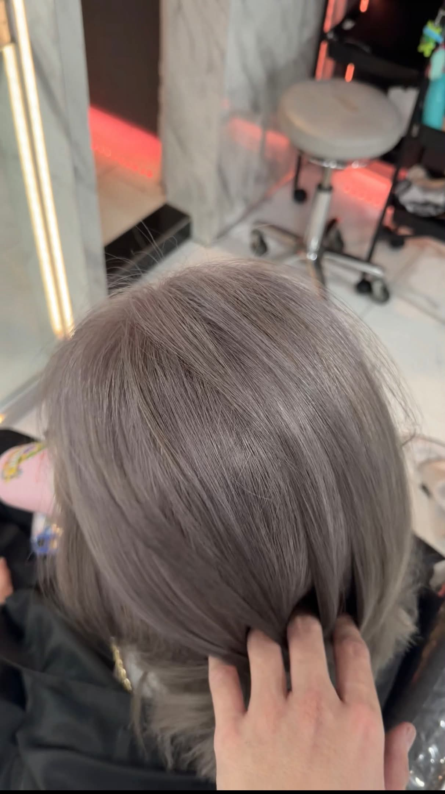
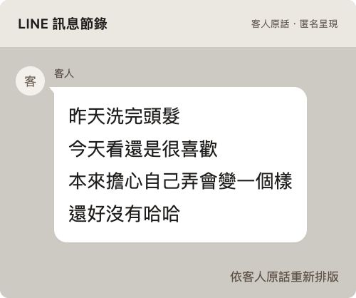
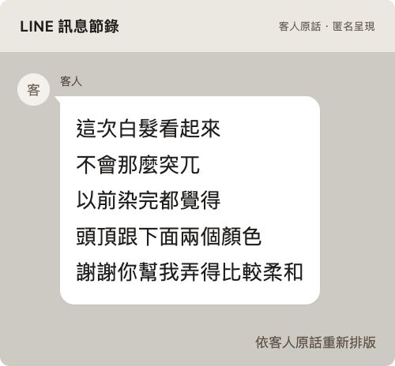

白髮共存
不想一直染黑，
也不想一直補染。
先看白髮長在哪裡、以前染過什麼，再安排整體髮色的深淺，讓新長出的白髮也能自然融進去。
你得到的：白髮長出來時，分界柔和一些，少一點急著補染的壓力。
白髮不想一直染黑，
刷染又怕太明顯？
讓白髮長出來時，分界柔和一點；
讓刷染有變化，也保留自然感。

我的專長，跟你有什麼關係？
白髮共存
先看白髮長在哪裡、以前染過什麼，再安排整體髮色的深淺，讓新長出的白髮也能自然融進去。
你得到的：白髮長出來時，分界柔和一些，少一點急著補染的壓力。
刷染線條
先確認你想低調還是明顯，再配合髮長與髮量安排顏色。
你得到的：依你想要的感覺調整，不用把別人的髮色整套搬過來。
為什麼找 COOPER？
你平常的樣子，會影響我怎麼設計。
低調或明顯，先照你的喜好一起討論。
你平常放直、捲髮或綁髮，都一起考慮。
退色、白髮長出來後的整理，也事先說明。
不同客人的真實作品。點照片可放大。
客人的回饋


你可能還在擔心
會先了解過去染燙的紀錄、目前髮況與想要的顏色，再說明能做到的程度。漂染會影響髮況，做之前會先和你聊清楚。
可以直接告訴我你不喜歡的樣子、每天願意花多少時間整理。會一起考慮比較適合的顏色與髮型，並說明照顧方式。
設計時會一起考慮新長出的白髮，讓它融進整體深淺，減少明顯分界帶來的補染壓力。之後仍需要整理，間隔會依生長速度、退色情況和你想維持的樣子一起安排。
在台北東區，採預約制。
費用會依服務項目、髮長與髮況評估。我會先和你討論適合的做法、說明費用，再由你決定。還沒想好要怎麼改變，也歡迎先聊聊。
你的下一步，很簡單
不用先選好染法，也不用立刻決定。
先聊需求、做法、費用和時間，
你覺得適合，再安排預約。
COOPER 的 LINE 官方帳號